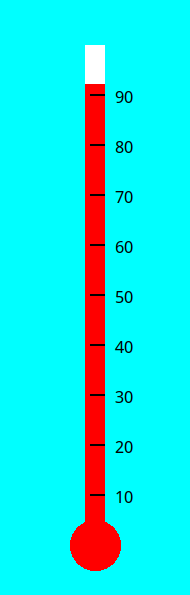

Lines and Labels
Jed Rembold
February 13, 2026
Happy Friday!!!
- Scan the QR code or go to https://tools.jedrembold.prof/daily
- Introduce yourselves! Fun question: What is your favorite shape?

Quick Announcements
- Project 1! Are you through Milestone 2?
- Our first exam is a week from today!
- Study materials coming out today
- Solutions posted next week
- Sections next week will be for reviewing and studying
- Study materials coming out today
Group Problems
Problem 1: The Big Dipper
- I have provided a file to you already with a night scene of the Big Dipper
- Your task is to draw in the lines connecting the proper stars
- No copy/pasting numbers here! Use methods to grab the needed coordinates from the star ovals
Problem 2: Label Bounder
- Write a program that:
- Chooses a random English word and sets it to a GLabel
- You can place the word starting on the left of the screen, roughly halfway down
- Sets the font of that GLabel to a random size between 20 and 100pt, serif
- Draws a rectangle immediately around the GLabel, such that its top is at the ascent distance and bottom at the descent distance.
- Chooses a random English word and sets it to a GLabel
Example Solution
from pgl import GWindow, GLabel, GRect
import random
from english import ENGLISH_WORDS
WIDTH = 500
HEIGHT = 200
gw = GWindow(WIDTH, HEIGHT)
word = random.choice(ENGLISH_WORDS).capitalize()
size = random.randint(20, 100)
label = GLabel(word, 0, HEIGHT / 2)
label.set_font(f"{size}pt serif")
gw.add(label)
box = GRect(
label.get_x(),
label.get_y() - label.get_ascent(),
label.get_width(),
label.get_ascent() + label.get_descent()
)
box.set_color('red')
gw.add(box)
Problem 3: What’s the Temp?
- I’ve already created the basic thermometer to the right with a randomly set temperature
- Your job is to add the line markers and temperature labels, getting as close as possible to the image
- There are some constants defined in the starter file to help!

Example Solution
# Just continuing from the starting template...
temp = 10
for i in range(MARKER_START_Y, BASE - THERM_HEIGHT, -MARKER_STEP):
line = GLine(
WIDTH / 2 + THERM_WIDTH / 2,
i,
WIDTH / 2 - THERM_WIDTH / 4,
i
)
line.set_line_width(2)
gw.add(line)
lab = GLabel(f"{temp}", WIDTH / 2 + THERM_WIDTH, i)
gw.add(
lab,
WIDTH / 2 + THERM_WIDTH,
i + lab.get_ascent() / 2
)
temp += 10Live Coding
Recreating Connections
- Suppose we want to recreate the starting layout of the NYT’s Connections game
- The puzzle for today looks like the image to the right

Code
from pgl import GWindow, GRect, GLabel
"""
Algorithm:
Make a bunch of box with text in them
Assign each box a location, and add it
"""
def make_and_place_box(word, x, y):
"""Make a box with the desired word centered in it
Algorithm:
Make a box of the desired dimensions
Make a label with the text
Center that label in the box
Add everything to the window
"""
box = GRect(x, y, BOX_WIDTH, BOX_HEIGHT)
label = GLabel(word.upper())
label.set_font("bold 20pt sans-serif")
new_x = x + BOX_WIDTH / 2 - label.get_width() / 2
new_y = y + BOX_HEIGHT / 2 + label.get_ascent() / 2
gw.add(box)
gw.add(label, new_x, new_y)
BOX_WIDTH = 200
BOX_HEIGHT = 100
BOX_SEP = 10
WIDTH = 4 * (BOX_WIDTH + BOX_SEP)
HEIGHT = 4 * (BOX_HEIGHT + BOX_SEP)
gw = GWindow(WIDTH, HEIGHT)
# Row 1
make_and_place_box('wayne',
BOX_SEP / 2,
BOX_SEP / 2)
make_and_place_box('parliament',
BOX_SEP / 2 + (BOX_WIDTH + BOX_SEP),
BOX_SEP / 2)
make_and_place_box('standard',
BOX_SEP / 2 + 2 * (BOX_WIDTH + BOX_SEP),
BOX_SEP / 2)
make_and_place_box('lesson',
BOX_SEP / 2 + 3 * (BOX_WIDTH + BOX_SEP),
BOX_SEP / 2)
# Row 2
make_and_place_box('kent',
BOX_SEP / 2,
BOX_SEP / 2 + (BOX_HEIGHT + BOX_SEP))
make_and_place_box('sync',
BOX_SEP / 2 + (BOX_WIDTH + BOX_SEP),
BOX_SEP / 2 + (BOX_HEIGHT + BOX_SEP))
make_and_place_box('sheer',
BOX_SEP / 2 + 2 * (BOX_WIDTH + BOX_SEP),
BOX_SEP / 2 + (BOX_HEIGHT + BOX_SEP))
make_and_place_box('colors',
BOX_SEP / 2 + 3 * (BOX_WIDTH + BOX_SEP),
BOX_SEP / 2 + (BOX_HEIGHT + BOX_SEP))
# Row 3
make_and_place_box('stark',
BOX_SEP / 2,
BOX_SEP / 2 + 2 * (BOX_HEIGHT + BOX_SEP))
make_and_place_box('camel',
BOX_SEP / 2 + 1 * (BOX_WIDTH + BOX_SEP),
BOX_SEP / 2 + 2 * (BOX_HEIGHT + BOX_SEP))
make_and_place_box('banner',
BOX_SEP / 2 + 2 * (BOX_WIDTH + BOX_SEP),
BOX_SEP / 2 + 2 * (BOX_HEIGHT + BOX_SEP))
make_and_place_box('utter',
BOX_SEP / 2 + 3 * (BOX_WIDTH + BOX_SEP),
BOX_SEP / 2 + 2 * (BOX_HEIGHT + BOX_SEP))
# Row 4
make_and_place_box('reseed',
BOX_SEP / 2,
BOX_SEP / 2 + 3 * (BOX_HEIGHT + BOX_SEP))
make_and_place_box('pure',
BOX_SEP / 2 + 1 * (BOX_WIDTH + BOX_SEP),
BOX_SEP / 2 + 3 * (BOX_HEIGHT + BOX_SEP))
make_and_place_box('flag',
BOX_SEP / 2 + 2 * (BOX_WIDTH + BOX_SEP),
BOX_SEP / 2 + 3 * (BOX_HEIGHT + BOX_SEP))
make_and_place_box('salem',
BOX_SEP / 2 + 3 * (BOX_WIDTH + BOX_SEP),
BOX_SEP / 2 + 3 * (BOX_HEIGHT + BOX_SEP))